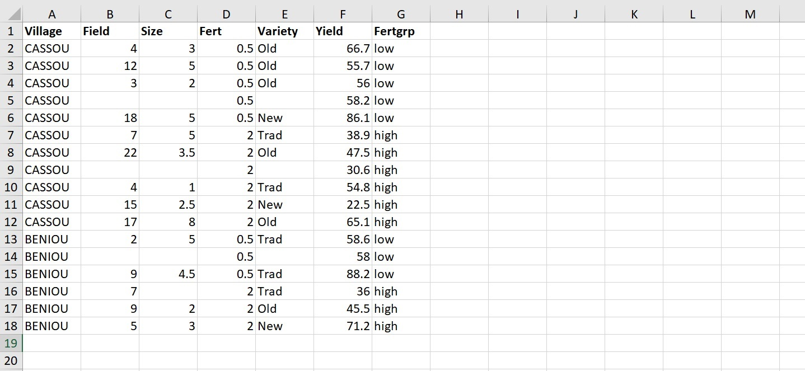
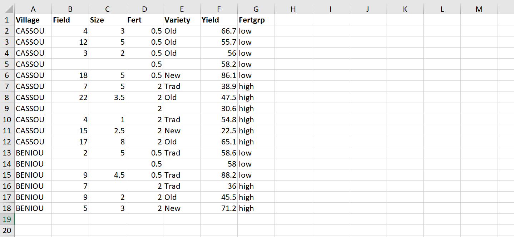

Importing data
shaping data
First let’s talk about the data shape. If you want to import data into R - or into any statistical software really - you need your data to have the right shape. It should take the form of one single “rectangle” of data, made of columns and rows that don’t vary in size, and where
- Each row represents one observation
- Each column represents one variable
The R community calls it tidy data. Here is a nice presentation illustrating this tidy data concept: Make friends with tidy data
You also want your column names to be at the very top, in one single row, and the rest of your data to start right below this first row, like in this screenshot.

 Everything in your rectangle of data should be part of your data. There’s no problem with having empty cells, but these have to be empty because the corresponding values are missing.
merged cells
In spreadsheets, it is tempting to merge your cells in order to make things look neater. If you want to use your data in any other software though it is bad idea to have cells that are merged. Instead, simply copy the value in all the cells that you thought about merging. Here is an example:
Missing values
So as said before, having Missing data is totally fine, at least it is not an issue for importing data. It is common for people to have a specific code to represent missing values, like -1, 99 or NA. These are all fine. What’s important is to choose a code that cannot be a value taken by your non-missing data, and to be consistent. If you code missing values differently for each of your columns, you’re asking yourself for trouble. My personal preference is to simply leave the cell empty. An empty cell is easy to spot and R will recognize it automatically as missing value.
saving as csv
importing data
Loading libraries
R also comes with lots of data
R comes with lots of functions that don’t need you to load any library, but it doesn’t come with the functions of ggplot or dplyr. So you will need to load these packages. There are two ways to do that. Either you load each of them individually, or you load the mega package tidyverse, which contains both of them, and lots of other ones that are also very useful.
If you run the command Inside a corde chuck, you place the command library(ggplot2)
real power of R comes from all this pa most likely, you will always want to load some libraries. are so many useful functions in additional packages that you will likely always want to lard some library be interesting in some functions that are not in base-R. Whenever you are using such function, but from some additional package. need to load some To load a library
Importing your data
If there are things that you do everytime, when you’re opening an R project in RStudio, these things should be in your R Markdown script. Apart from saving time, it ensures that you and the people with whom you share your script all do these things and do them in the same way. That’s key for reproducibility. Two obvious examples of commands that should be in your script are the commands to load libraries and to import data. For loading libraries, we already discussed how to place the right command right away in your script. For importing data though, it may be a good idea to go a slightly longer route
talk about the one to import data
those things These include loading the right libraries and importing your data. everytime you open your project that will In your script, you should have a
coding for diffMy advice iAnd you can represent them with any type of character. You should try and be consistent.
So a well formatted data in excel should look like this:
Now sometimes you can’t fit all your data in one single rectangle of data. This is fine. Place your data. Having multiple rectangles
W
Format of your data.
R can import data from many different types of file. We can’t cover all of them here obviously, so we’ll look into the most likely scenarios.
Data from other statistical softwares
If your data comes from SAS, SPSS or STATA, you don’t have to worry about the shape of your data. will need to use an external package. There are multiple options, but we recommend you use the package haven, which is another package included in tidyverse.
If your data comes from a spreadsheet like Excel, Google Sheets, LibreOffice Calc, R surely has some package that can supposedly read your data directly from your file. But we recommand you to always use the same method which is save the data as a csv file first, and then import this file using the function read.csv.
it is best to save i
Importing data for another reknown statistical software is very easy.
the types of format here, but we will talk about the most common ones: SAS, SPSS or STATA, Excel, CSV,
because Basically any common file format that can store data and , but this should mean because the data is missing. be there for a reason to represent missing values.
cells empty shouldn’t have any empty row - except , except if it’s to represent missing values. Having missing values is not a problem for the importation stage.
missing values are not a problem.
not to have any space in between to have and Here is an example of badly formatted data
And here is an example of well formatted data
The shape of your data is important.
Ok, let’s see if you can import some data and reproduce a few of the things we’ve done in the previous workbooks.
Here are the links towards the pulse and imdb datasets:
Click on the links and download the two files. Save them is some folder. When working on your own data, it’s good that you use RStudio projects like Andy Field showed you. For this course, you don’t have to do that, but try at least to be organised, with a folder name and a location relevant to the course and the organisation of your computer.
The files are csv files that are ready to be imported, so you can follow the importation process shown at the end of the video:
- from Rstudio, click on the
import datasetmenu. It is located at the top right of your screen if you haven’t changed the default organisation of the Rstudio windows. If you’ve copied Andy Field’s organisation, then it may be at the bottom left of your screen. - click on
From Text (base) - go find the Pulse.csv file
- check in the preview window that the importation seems to work well. If you see some issues like weird column names, weird rows or columns, play with the parameters on the left to make it look better. Click
import - copy the command that R just wrote in the console (only the
read.csv()command. Theview()command is an interactive command that should not be on your scripts). - If you haven’t done so yet, create a new R Markdown file, clean it like Andy Field shows in his videos (video
Working in RStudio, 12:35 - 14:25), and paste the command in an R chunk at the top of your file (like he does in the same video, at 15:55). - If you’ve not done so yet, save your R Markdown file.
Having the importation command in your R Markdown script file is important, so that the next time you open RStudio, you don’t have to go through the importation process again. You can just run the command that is in your file.
Note: you can see that the command contains the path of your data file. So if you move your data, you’ll have to change the path.
Working with data
Now that your Pulse data is imported, you need to make sure that the library ggplot2 is loaded.
- if you haven’t done so yet, install the package
tidyverse(see 8:48 in Andy Field’s videoInstalling and loading packages). tidyverse contains both, the packages ggplot2 and dplyr, so you don’t need to install anything else. - write in your top R chunk of your R Markdown file
library(ggplot2). Run the command.
Note: the package tidyverse is installed on your computer, so you don’t need to install it again, except for when you update your version of R. Loading packages is something you need to do each time you open a new session of RStudio. That’s why we place the command library() in our script. The next time you open your R Markdown file, you simple run the commands at the top of your file and you’re ready to work on your data.
Now, create a new R chunk below the one where you imported the data pulse, and paste in it the following command:
#ggplot(data = Pulse, aes(x = Education)) +
# geom_bar()
6+5Run the command. If you see the following graph, then congratulations. You know how to import data, and run R commands in RStudio! If it doesn’t work, double-check that your R chunk is correct, try to identify what is wrong and tell us on the forum.
#ggplot(data = Pulse, aes(x = Education)) +
# geom_bar()Now both, the command and graph should look familiar to you. That’s because the command is simply copied from one of the first commands in the first ggplot workbook.
Question: create several R chunks, copy in each of them, a command from the ggplot workbooks, run the commands and check that you obtain the same result as in the workbooks